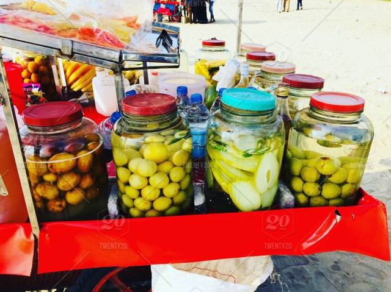

Kozhikode is a coastal city in the south Indian state of Kerala. It was a significant spice trade center and is close to Kappad Beach, where Portuguese explorer Vasco da Gama landed in 1498. It was the Capital of Malabar during the Zamorin rule 500 years ago and is famous for its centuries-old trade in cotton and spices with Jews, Arabs, Phoenicians and Chinese.The central Kozhikode Beach, overlooked by an old lighthouse, is a popular spot for watching the sunset.Today Kozhikode is one of the best cities in Kerala. Endowed with lush green countrysides, serene beaches, historic sites, wildlife sanctuaries, rivers, and hills, this city enchants both its inhabitants and its guests. With its unique culture and friendly ambiance, Kozhikode is a wondrous destination for all.